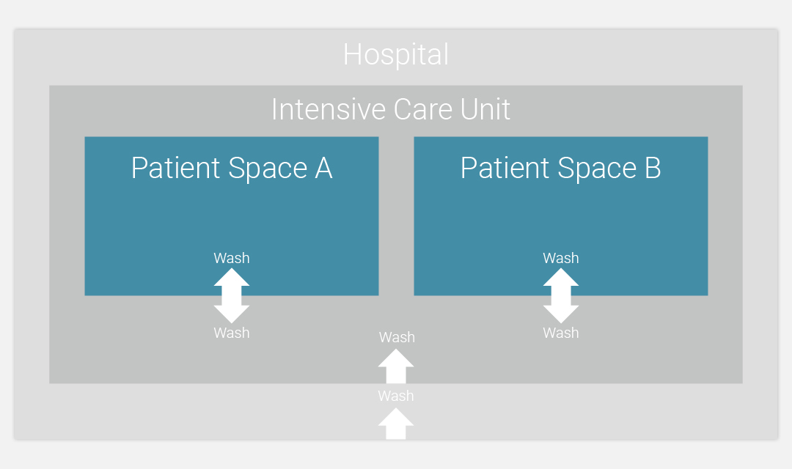
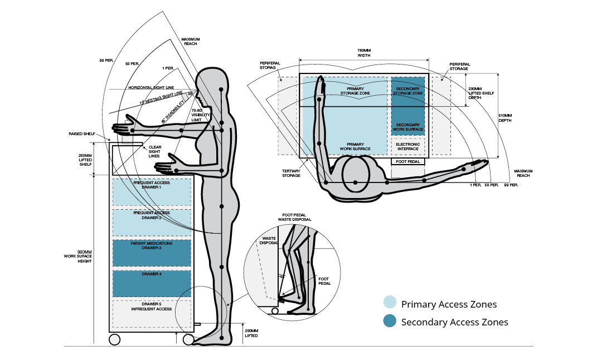

Project: Redesign of Supply Use and Administration in Canadian ICUs
Role: Design Research / Workshop Facilitation / Co-Design / Industrial Design
Timeline: Sept 2015 - April 2016
Four separate site visits to hospitals were made to interview healthcare professionals and understand the challenges of the ICU (Intensive Care Unit)environment. During visits, I observed that nurses don‘t feel confident in the current supply system design and often have to improvise their own solutions to provide patient care. This leads to increased clutter and wasted supplies - upwards of $100 million annually in Canadian hospitals.
A recent procedural change in Canadian hospitals has helped to solve this problem. By moving supply storage to a ‚boat‘ outside the patient room, waste creation was reduced without comprimising supply access. The new model has been adopted with some success by the Ottawa Hospital ICUs, but, existing supply carts don‘t meet the constraints of the new space, resulting in increased clutter and added stress to hospital staff.
A new use case was prototyped and optimized through interviews with medical staff. This storyboard was repeatidly updated with new findings throughout the design process.
Hospital staff and visitors are required to wash hands when crossing between zones

Nurses and key stakeholders were invited to a mock ICU room and asked to perform common tasks using reconfigurable mock-ups. Together, new strategies for organizing, cleaning and resupplying the carts were developed and implemented into the new design.
An ergonomic schematic helped to communicate and discuss design intent with stakeholders before executing on the design.
The proposed design for the new supply server addresses many of the issues relating to supply use under the new model of care in Canadian ICUs. Feedback from nurses and mentors was extremely positive, with Herman Miller taking note of my research for future internal studies into healthcare supply management. The work was awarded a Provost Scholarship for Academic Research at Carleton University in June 2016.
 Back to Projects
Back to Projects